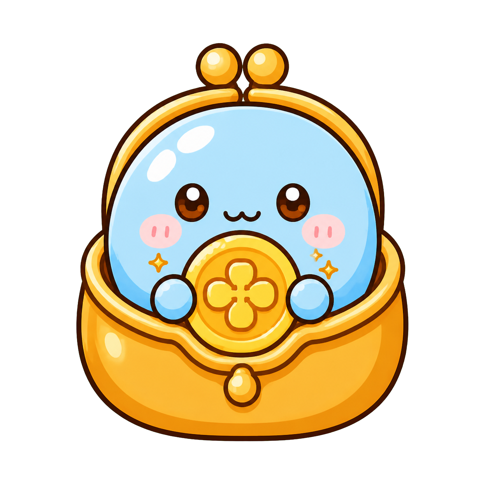
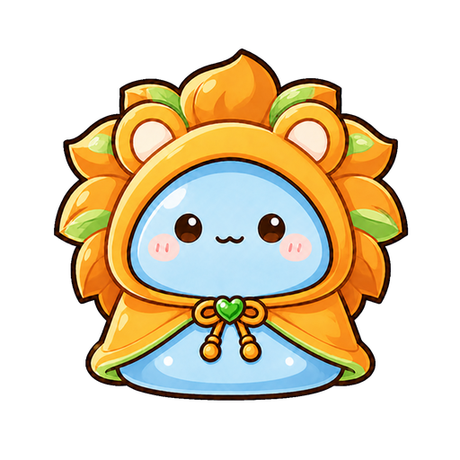

LIVE WITH MOCHISURA
芽を出し、花を咲かせ、風に飛ばされ、また根を張る。もちスラの十二の姿を借りて、星と暦から自分の輪郭を読んでいく場所です。聞くのは生年月日だけ、入力はこの画面から出ません。
DIAGNOSIS
軽いものから順に並んでいます。
西洋のホロスコープと、東洋の四柱推命・宿曜・九星気学・紫微斗数。 違うのはどの問いに答えるかだけです。
入力した内容は外へ送信せず、この画面の中だけで計算しています。

お金の診断 大事だと思っているものと、実際に払っているもののズレ。 生年月日＋七つへの配点 相性を読む 相手があなたに与えるものと、あなたが相手に与えるものは違います。 生年月日ふたつ
星読み毒舌診断 全部出します。なぜそう出たのかまで見せます。 生年月日・時刻・場所MOCHIKURU
繰ると、来る。
STARS & CALENDAR